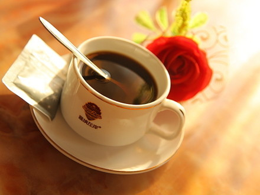

一杯上好的咖啡源自小小的咖啡豆，经历了漫长的时间和许多道精心工艺，并融入了无数人的努力才能成就，可谓杯杯都来之不易。对于一杯咖啡的品质，有7个决定性因素。前三个取决于种植咖啡豆的农民——咖啡树的品种、咖啡的产地、以及种植方法，被称为决定咖啡质量的基础；第四个 因素取决于采摘作业者。至此，我们还能改善咖啡的品质与口味。而此后，我们只能保持或是破坏这些咖啡的品质，而无法再使他变得更好。之后便是至关重要的3 步——咖啡豆的运输和储藏；咖啡烘焙师的经验与手法以及咖啡豆的烘焙方式；最后，还有咖啡豆的研磨与咖啡制作。所有这7大因素都能影响咖啡的口感，与咖啡 的品质息息相关。
咖啡豆有超过20种类别，但其中只有两种最为主要。世界上绝大多数顶级品质的咖啡都源自他们——全球咖啡总产量的70%都源于阿拉比卡 （Arabica）咖啡豆，因其较低的咖啡因含量以及基于此之上而提供的出色口感被誉为最上乘的咖啡豆品种。另外不到30%的咖啡则源于罗布斯塔 （Robusta）咖啡豆，口味不及阿拉比卡般丰富，但咖啡因含量却较之高出50%。COSTA就在其所创造的咖啡配比中添加少量罗布斯塔咖啡豆，以平衡 咖啡的口味并保证足够的咖啡油脂，创造出独特的摩卡意大利配方（Mocha Italia）。
蜚声世界的“蓝山咖啡”=优良的阿拉比卡种 咖啡适宜种植带 （险峻及高海拔的山上）肥沃的火山灰土壤 海洋季风气候（气候湿润，终年多雾多雨，平均降 水为1980毫米，气温在27度左右） 海拔1600米-2256米（最好的蓝山咖啡豆是NO.1 peaberry，也称为珍珠豆，是海拔2100米的产品中精挑细选的小颗圆豆，精品中的精品）